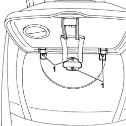
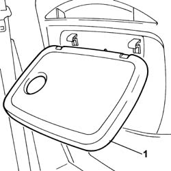

7045D62 (ONE) LH OR RH OBJECT-HOLDER DESK ON FRONT SEAT BACK REST REAR UPHOLSTERY - R.R.
- Path
- Procedures > 70 FITTINGS > 7045 FRONT SEATS > 7045D RIVESTIMENTO/IMBOTTITURA SEDILI ANTERIORI > 7045D62 (ONE) LH OR RH OBJECT-HOLDER DESK ON FRONT SEAT BACK REST REAR UPHOLSTERY - R.R.
- Kind
- repair procedure (removal / refitting; the operation number is the code)
- Applies to
- all engines; all production periods
- Interactive page
- https://sloeber94.github.io/elrnDB-fUlss/en/#/179007868
Applies to: all engines; all production periods
 Removing
Removing
 Refitting
Refitting- Place the oddments table in a horizontal position.
1. Undo the bolts fixing the oddments table to the front seat backrest.

Applies to: all engines; all production periods
1. Remove the oddments table from the front seat backrest.

Applies to: all engines; all production periods
Refitting
Removing- Fit the oddments table on the front seat backrest.
- Tighten the bolts fixing the oddments table to the rear seat backrest.
- Place the oddments table in a vertical position.